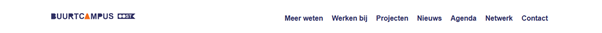
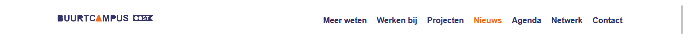
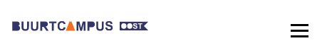
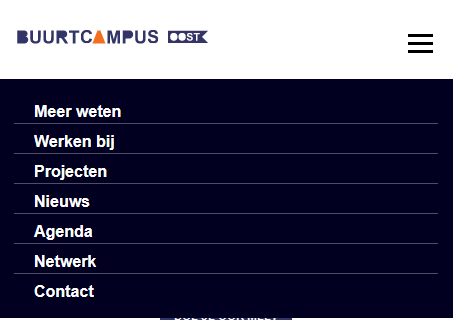
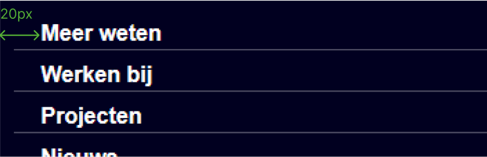
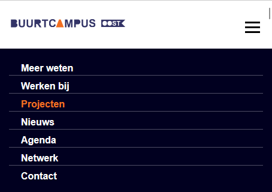

Styleguide Plantswap V1.0
Dit is de styleguide gemaakt voor Plantswap. Een living styleguide biedt consistentie tussen merkuitingen, het is een referentiekader voor je team en nieuwe ontwerpers/developers kunnen sneller aan de slag met een goede merkreferentie.
Belangrijke punten:
- Het is naslagwerk, dus makkelijk en snel.
- Een merk ontwikkelt, dus moet de styleguide up-to-date gehouden worden.
Header
Header
Wel doen: desktop versie

Op de desktopversie staat het logo van de buurtcampus links en het menu naar de andere webpaginas van de buurtcampus rechts.
De links naar de verschillende webpaginas zijn in het lettertype Arial en bold, de kleur van de links is de blauwe kleur uit de huisstijl als niet op een pagina, de oranje als je op een specifieke van deze paginas zit.
De font-size van de links is 16px.
Boven en onder het menu en het logo zit een padding van 25px.
Wel doen: mobiele versie
 Net als in de desktopvertie zit er een padding onder en boven het logo en de drie streepjes onder elkaar waarmee je het menu opent.
In de mobiele versie is het menu in de vorm van een uitklapmenu. Dit menu is, wanneer geopend, het blauw van de huisstijl met witte letters. Het lettertype is Arial en bold.
De font-size van de links is 16px.
Aan de linkerkant van de menu items is een padding van 20px.
Als je op een van de webpaginas zit, wordt de link van die pagina de oranje van de huisstijl.
Niet doen
Behoud niet de hele nav, hierdoor nemt het te veel ruimte in.
Maak niet een volledig andere layout zodat het niet een heel andere website is op lagere resoluties.
Logo

Plantswap Logo
Het logo zorgt ervoor dat de bezoekers weten... Het logo moet duidelijk zichtbaar en goed leesbaar zijn. Voor het Plantswap logo is de letterstijl van het logo van Buurtcampus Oost aangehouden. Hierdoor blijft Plantswap voor bezoekers herkenbaar als project van Buurcampus Oost. Om het logo beter te laten aansluiten bij het planten thema, is gekozen voor de kleur groen (#224D12)
Bij desktop gebruik
Logo
De aanbevolen minimum grootte voor het plantswap logo op desktop is … pixels hoog.
Favicon
Het icoon dat in het tabblad zichtbaar is laat … zien.
Header
Wel doen
Vertel hoe dingen toegepast moeten worden.
Hoe kan ik het logo gebruiken op verschillende achtergronden?
Dit is de richtlijn en een aantal voorbeelden voor het toepassen van het logo op verschillende achtergronden
Niet doen
Vertel hoe dingen vooral niet toegepast moeten worden.
Heading3
Header
Wel doen
Vertel hoe dingen toegepast moeten worden.
Niet doen
Vertel hoe dingen vooral niet toegepast moeten worden.
Heading4
Header
Wel doen
Vertel hoe dingen toegepast moeten worden.
Niet doen
Vertel hoe dingen vooral niet toegepast moeten worden.
Heading5
Header
Wel doen
Vertel hoe dingen toegepast moeten worden.
Niet doen
Vertel hoe dingen vooral niet toegepast moeten worden.